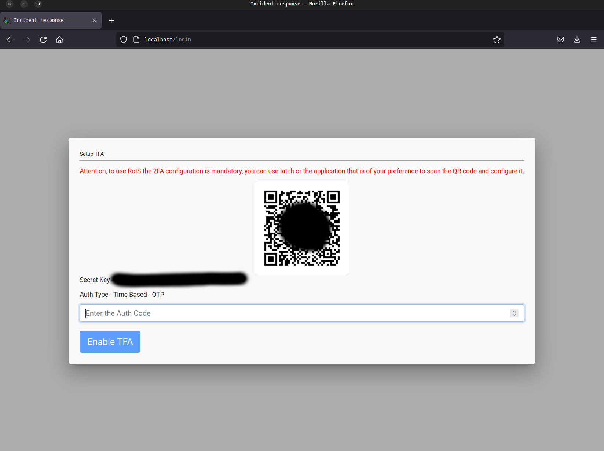
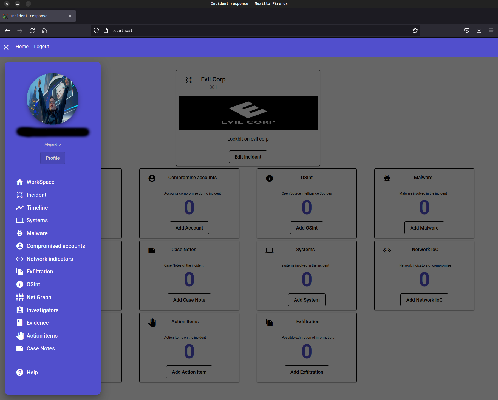

SceneRecon deployment
SceneRecon es una aplicacion contruida con la finalidad de facilitar el control y flujo de informacion durante un incidente, permite almacenar todos los datos necesarios para documentar el incidente y graficar de manera automatica los diferentes movimientos que tuvieron los adversarios dentro de la red.
La aplicacion se compone de tres contenedores completamente separados entre ellos.
- Base de datos
- Backend
- Frontend
En la base de datos encontraremos una mongodb, este contenedor por defecto no tendra persistencia en su informacion, es por esto que recomiendo un despliegue persistente de docker en este sentido, en un blog posterior explicare como realizar este procedimiento.
En el backend encontraremos una aplicacion nodejs, esta se encargara de exponer una API-Rest que pondra a disposicion del Frontend todas las funciones necesarias para el control de la aplicacion.
En el frontend encontraremos una aplicacion en angular que sera la encargada de ponerle cara a SceneRecon.
deployment
Para el despliegue usaremos docker compose (imprescindible la previa instalacion de docker en su maquina.)
Con el siguiente comando clonamos el proyecto.
| (Alerta!! el proyecto tiene varios ficheros que explicare mas adelante, no dejes la configuracion por defecto si vas a hacer un despliegue productivo.) |
$ git clone https://github.com/skyg4mb/SceneRecon
$ cd SceneRecon
Con el siguiente comando desplegamos la aplicacion, de acuerdo a la configuracion registrada en el docker-compose.yml
$ docker compose up -d
Al final obtendremos una salida como la siguiente:
El acceso a la aplicacion lo encontrara en http://localhost, primero debe registrar un usuario y posteriormente activar el 2fa con cualquier aplicacion OTP, Google Authenticator por ejemplo.
Una vez ingresamos a la aplicacion podremos ver una pantalla de login, es clasica pantalla de usuario y password, sin embargo primero se debe realizar el registro de un usuario.
La pantalla de registro es en realidad muy simple, solo debemos colocar un correo electronico y una pass, anteriormente era necesario verificacion de correo electronico, esta funcionalidad la he desactivado para fines practicos, sin embargo es sencilla su activacion.
Una vez completado el registro retornaremos automaticamente a la pantalla de login, alli escribimos nuestro usuario y pass, la primer ocasion que nos autenticamos exigira el registro con una aplicacion OTP, puede ser por ejemplo Google Authenticator, escaneamos el QR code y tecleamos el codigo para activar el 2FA.

Ingresamos a la aplicacion y solo tendremos una imagen como la que vemos a continuacion.

Es momento de crear nuestro primer incidente:
- CaseID: Codigo que quieres dar al incidente.
- Client: Nombre del cliente (regularmente es un nombre clave)
- ClientLogo: URL hacia una imagen del cliente (En un release colocare upload de ficheros)
- Summary: (Breve resumen del incidente)
Aqui debemos actualizar la pagina o ir a home (Promero arreglar esto y que vaya directo al incidente).
Obtendremos una pagina con todas las opciones de informacion del incidente:
- Eventos
- Compromise Accounts
- OSint
- Malware
- Evidence
- Case Notes
- Systems
- Network IoC
- Investigators
- Action Items
- Exfiltration
Finalmente esta es nuestra aplicacion, lista para ser usada
